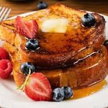

French Toast

How to make a pile of gr8 french toast.
Ingredients
- 2/3 cup milk
- 2 large eggs
- 1 tsp vanilla extract
- 1/4 tsp cinnamon
- Salt to taste
- 6 thick slices of bread
- 1 tbsp unsalted butter, or more as needed
Steps
- Whisk milk, eggs, vanilla, cinnamon and salt together in a shallow bowl.
- Lightly butter a griddle and heat over medium-high heat.
- Dunk bread in egg mixture, soaking both sides. Transfer to the hot skillet and cook until golden, 3 to 4 minutes per side. Serve hot.